1. この製品でできること
本機は、M5Stack Core2 + M5 Unit MIDI (SAM2695) をベースにした MIDI 演奏機 / トランスポーザー です。 起動直後は 演奏 (PLAY) モード に入り、Unit MIDI 内蔵の GM 音源から音を鳴らせます。 C 長押し で、転調機能や MIDI 加工機能を持つ別グループに移れます。
演奏 (PLAY) 新規
外部 MIDI キーボードから入った Note を そのまま Unit MIDI で発音 します。 画面で 128 音色から選択でき、Volume / Program / Pitch Bend / Sustain も操作できます。
転調 (Transpose)
演奏中のキーを半音単位でずらして出力します。
4 つの操作モード (DIRECT / KEY / INSTANT / SEQUENCE) を場面で使い分けます。
FILTER
不要な MIDI メッセージを 遮断 します。
例えば「Pitch Bend だけ通したくない」「Ch10 のドラムだけ無視したい」といった処理ができます。
MAPPER
MIDI メッセージを 別のメッセージに変換 します。
例えば「CC#1 を CC#11 に置き換える」「Ch1 を Ch3 に流す」といった変換ができます。
SMF プレーヤー 新規
SD の /smf フォルダ内の .mid / .smf ファイルを再生 します。
16 チャンネル分の鍵盤を画面下に表示し、Note On に応じてキーが点灯します。
SysEx メッセージにも対応します。
FILTER → MAPPER → Transpose → MIDI OUT です。
FILTER と MAPPER はそれぞれ独立して BYPASS / ACTIVE が切り替えられます。
両方を BYPASS にすれば、従来どおりの低遅延な転調処理だけが動きます。
PLAY モードのときは外部音源を経由せず、Unit MIDI 内部の SAM2695 が直接発音します。
内部では Port A の I2C を解放した上で UART2 (G33=RX / G32=TX, 31250 bps) として再構成しています。 Port A 上の他の I2C デバイスは併用できません。
2. 演奏 (PLAY) モード
起動直後の 基本モード です。M5 Unit MIDI 内蔵の SAM2695 (GM 音源) を直接鳴らします。
外部 MIDI キーボードを接続すれば、押した鍵盤の音がそのまま Unit MIDI から鳴ります。
キーボードがない場合でも、画面下の TEST TONE を押せば SD カードの /SMF/testtone.smf (なければ簡易フレーズ CDEFGABC) が試聴できます。
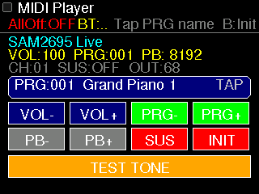
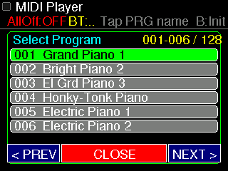
画面の構成
| 場所 | 内容 |
|---|---|
| 2 段目 | SAM2695 Live + 主要パラメータ (VOL / PRG / PB) |
| 3 段目 | 受信中チャンネル CH / SUS / 送信カウンタ OUT |
| 音色名バー | 現在の Program 番号と GM 音色名 (タップで一覧ピッカーを開く) |
| ボタン上段 | VOL- / VOL+ / PRG- / PRG+ |
| ボタン下段 | PB- / PB+ / SUS (サスティンON/OFF) / INIT (再初期化) |
| 最下段 | TEST TONE ボタン (SD /SMF/testtone.smf を再生 / 無ければ簡易フレーズ) |
操作早見表
| 操作 | 働き |
|---|---|
| 音色名バーをタップ | 128 音色ピッカーを開く (< PREV / NEXT > / CLOSE) |
VOL- / VOL+ | CC#7 を 8 ステップ単位で増減 (0–127) |
PRG- / PRG+ | 音色を 1 つ前 / 後ろへ |
PB- / PB+ | Pitch Bend を 256 ステップ単位で増減 (0–16383, 中央=8192) |
SUS | CC#64 サスティンを ON / OFF トグル |
INIT | GS Reset → Volume / Program / Bend / Sustain を初期値で送り直す |
TEST TONE | SD カードの SMF (testtone.smf) を再生 (なければ簡易フレーズ) |
INIT と同じ (再初期化) | |
| 短押し | SMF プレーヤーを開く |
| 長押し | 転調グループへ移動 (最後に開いていた転調サブモードへ) |
外部 MIDI キーボードとの連携
Unit MIDI に MIDI IN ジャックがある別の MIDI インタフェースを併用しているか、
Bluetooth/USB MIDI 経由で本機に Note On が届くと、PLAY モードでは FILTER / MAPPER / Transpose を経由せずそのまま発音 します。
受信したチャンネルは自動で CH 表示に反映され、その後の Volume / Program / Bend / Sustain 操作は同じチャンネルへ送られます。
- Unit MIDI が Port A (Grove) に挿さっていることを確認
INITを押して Volume / Program / Pitch Bend を既定値に戻すTEST TONEを押し、Unit MIDI のヘッドホン端子から音が出るか確認- それでも無音なら、Port A に他の I2C デバイスを挿していないか確認 (UART と排他)
3. SMF プレーヤー 新規
PLAY モードで 短押し すると SMF プレーヤー画面に切り替わります。
SD カードの /smf または /SMF フォルダにある .mid / .smf ファイルを再生します。
16 チャンネルの鍵盤を画面下部に表示し、再生中は Note On に応じてキーが緑 (白鍵) / オレンジ (黒鍵) で点灯します。
System Exclusive メッセージにも対応しており、ペイロードはそのまま MIDI OUT (Unit MIDI) に流れます。
再生 / 停止は画面右上の ▶ (再生) / ■ (停止) をタッチして行います。
=曲戻り / =曲送り、いずれかの長押しで「便利な即選曲」画面(フォルダブラウザ) が開き、サブフォルダをたどって曲を選べます。
は短押し・長押しともにモード切り替え専用です。
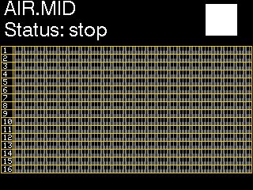
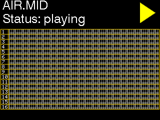
使い方
- microSD カードに
/smf(または/SMF) フォルダを作り、.mid/.smfファイルを入れる。サブフォルダで整理しても OK。 - 本体起動後、PLAY モードで を 短押し → SMF プレーヤー画面が開く (初回はスキャンに数秒かかる)。
- 画面右上の ▶ をタッチで再生、■ をタッチで停止。
- で曲戻り、 で曲送り。再生中に押すとそのまま新しい曲を続けて再生。
- または を 長押し → 便利な即選曲画面(フォルダブラウザ) が開く。フォルダをタッチで開き、曲をタッチで即再生。
[..]で 1 階層戻る。<</>>でページ送り、右上Xで閉じる。 - 音量は画面下部のバーをタッチして調整 (左端=0 / 右端=最大)。本体に物理ボリュームが無いため、ここで音源全体の音量を変えます。
- 別モードへ移るには (短押し・長押しどちらでも)。再生中は自動で停止し All Notes Off を送ります。
操作早見表
| 操作 | 働き |
|---|---|
| 画面右上 ▶ タッチ | 再生 |
| 画面右上 ■ タッチ | 停止 |
| 短押し | 曲戻り (再生中なら新しい曲も続けて再生) |
| 短押し | 曲送り (再生中なら新しい曲も続けて再生) |
| / 長押し | 便利な即選曲画面 (フォルダブラウザ) を開く / 閉じる |
| 画面下部のバー タッチ | マスターボリューム調整 (左端=0 / 右端=127) |
| 短押し・長押し | モード切り替え (SMF プレーヤーを抜けて PLAY モードへ) |
便利な即選曲画面 (フォルダブラウザ)
| 操作 | 働き |
|---|---|
[DIR] 名前/ をタッチ | そのサブフォルダを開く |
[..] up をタッチ | 1 階層上のフォルダへ戻る |
| 曲名をタッチ | その曲を即再生 (このフォルダが曲送り/戻りの対象になる) |
上部 << / >> (または / 短押し) | ページ送り |
右上 X | 選曲画面を閉じてプレーヤーへ戻る |
- SMF パーサは
MD_MIDIFileライブラリ (リポジトリsrc/MD_MIDIFile/に同梱、移植元:../M5Core2-SMF-Player) を使用 - 曲が終わると自動で次曲へ進みます (曲送り/戻りは現在再生中の曲があるフォルダ内で循環)
- 選曲画面は
/smf(基底) より上の階層へは移動しません - SMF プレーヤー入室時に SD バスを
SD.hからSdFatに譲渡し、退出時に戻します。 滞在中はシーケンスパターンの SD 保存などが一時停止します。 - 再生 / 停止と選曲はタッチ、曲送り/戻りと選曲画面の開閉は / ボタンで操作します
- 画面下部のボリュームバーは GM ユニバーサル Master Volume SysEx (
F0 7F 7F 04 01 00 vol F7) で Unit MIDI 全体の音量を設定。曲ごとの CC7 (チャンネルボリューム) には触れないのでミックスは保たれます。曲頭の GM リセット対策として再生開始の約 0.8 秒後に再送します
4. 本体の見方とボタン
本体の前面下部(液晶の下)には 3 つのタッチボタン があります。薄く赤色で丸印が3つ並んでは位置されています。 画面表示部もタッチパネルになっており、画面上のボタンも指で押せます。
3 つの物理ボタンの役割
| ボタン | 役割 |
|---|---|
| All Notes Off の ON / OFF 切替 | |
| 現在のモードによって役割が変わる 後述 | |
|
短押し グループ内のモードを順送り 長押し 転調グループ ⇄ MIDI Manager を切替 |
例えば DIRECT 画面では レンジ切替 ですが、FILTER 画面では Type を順送り になります。 各モードの説明にある「B の役割」を確認してください。
5. 共通画面の見方
すべての画面の最上段には 共通のステータス行 が表示されます。 このステータス行の意味さえ覚えれば、どの画面でも迷いません。
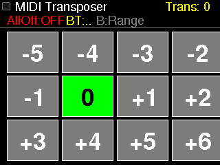
A:AllOff B:Action C:N)
I:○ O:○: MIDI 入出力カウンタ
ステータス行の各文字の意味
| 表示 | 意味 |
|---|---|
A:AllOff | A ボタンで All Notes Off の動作を切り替えられる、という意味 |
B:Range / B:Zero / B:Next など | B ボタンの現在の役割 (画面ごとに変化)。転調モードでは DIRECT=レンジ切替 (B:Range) / INSTANT=転調を 0 にリセット (B:Zero) / SEQUENCE=次のステップへ (B:Next) |
C:N | C ボタンに割当中の動作の略称 |
I:○ | 受信した MIDI メッセージ数 |
O:○ | 送信した MIDI メッセージ数 |
BT:… | Bluetooth HID フットペダル の接続状態 |
6. 基本操作のルール
5.1 画面の階層
本機の画面は 3 つのグループに分かれます。
C 長押し でグループを巡回します (PLAY → 転調 → MIDI 管理 → PLAY)。
C 短押し で同じグループ内のモードを順送りします。
PLAY モードでは C 短押し が SMF プレーヤー入口になります。
SMF プレーヤー中は (短押し・長押しどちらでも) で PLAY に戻ります。
5.2 グループ内のモード遷移
演奏グループ
PLAY ⇄ SMF プレーヤー (PLAY で C 短押し / SMF で C 押しで PLAY へ)
転調グループ (C 短押しで巡回)
DIRECT → KEY → INSTANT → SEQUENCE → DIRECT…
MIDI 管理グループ (C 短押しで往復)
FILTER ⇄ MAPPER
SMF プレーヤー
再生/停止=右上 ▶/■ タッチ / A=曲戻り・B=曲送り / A・B 長押し=即選曲画面 / 下部バー=音量 / C=モード切替
7. Bluetooth HID フットペダル
本機は Bluetooth HID キーボード型のフットペダル に対応しており、 手を使わずに転調操作ができます。鍵盤を弾いている最中でも、足元で転調メニューを左右に動かして次の転調値へ切り替えられます。
6.1 動作確認済みハード
6.2 ペアリングと再接続
一度ペアリングすれば、本機の電源を切っても bond 情報 (リンクキー) は本体内に保持 されます。
次回からは、本機を起動 → ペダル (SPT-10) を電源 ON するだけで、約 20〜30 秒で 自動的に再接続 します。
画面共通ヘッダの BT:… 表示で、現在の接続状態を確認できます。
/bt_bond.dat にもバックアップ されます。
NVS が消えてしまった場合 (ファームウェア書き直し等) でも、SD のバックアップから自動復元される設計です。
- SPT-10 側で別ホストとペアリングし直した
- 本機の NVS が消え、かつ SD カードのバックアップも無い
6.3 ペダルの動作
SPT-10 の 左ペダル と 右ペダル がそれぞれ「左へ」「右へ」のメニュー移動として働きます。 どのモードでも基本は 転調メニュー上の左右移動 ですが、いまどの画面を開いているかによって移動先が変わります。
| 画面 | 左ペダル | 右ペダル |
|---|---|---|
| DIRECT | 表示中の 12 ボタン上で 1 つ左の転調値へ | 1 つ右の転調値へ |
| KEY | 1 つ左の転調値へ | 1 つ右の転調値へ |
| INSTANT | 1 つ左の転調値へ | 1 つ右の転調値へ |
| SEQUENCE | 1 ステップ前へ | 1 ステップ後ろへ |
| FILTER / MAPPER | 未使用 (画面操作はタッチ/ボタンで行ってください) | |
8. DIRECT モード
画面に並ぶ 12 個のボタンを直接タップ して転調値を決める、最も直感的なモードです。
使い方
- 転調したい数字 (例:
+3) のボタンをタップします。 - 選んだ数字が青く反転し、画面右上の Transpose 値 が更新されます。
- すぐに次の入力 MIDI からその転調が反映されます。
B ボタン: レンジ切替
表示する 12 個の値の 範囲 を切り替えられます。
| レンジ | 用途 |
|---|---|
-5 .. +6 | 標準。低めも高めも均等にカバー |
0 .. +11 | 原調から上方向にだけ転調したいとき |
-11 .. 0 | 原調から下方向にだけ転調したいとき |
9. KEY モード
キー名 (C, D, E… / Am, Bm, …) で転調値を決めるモードです。 「曲を G に下げて」と言われたとき、G の鍵盤を押すだけ で済みます。
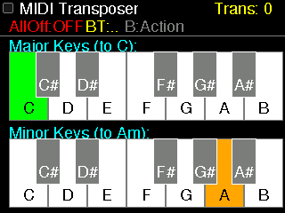
使い方
- 上段の鍵盤 (Major Keys (to C)) で 原曲のキー をタップします。
- 本機が自動的に C 基準への転調値を計算します。
- マイナー曲の場合は下段の Minor Keys (to Am) を使います。
B ボタン: 上位転調 / 通常転調 切替
通常転調: 最短距離で目的キーへ近づきます。
上位転調: オクターブ上げで盛り上げる演出を行いたいときに使います。
10. INSTANT モード
よく使う転調値を 巨大なボタンでワンタップ呼び出し するモードです。 ライブ中で素早く 1 度や半音だけ動かしたいときに最適です。
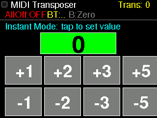
標準で並んでいる値
0 / +1 / +2 / +3 / +5 /
-1 / -2 / -3 / -5
原調 (0) はステージング中に「素のキーへ戻る」ためのリセットボタンとしても使えます。
画面下の B ボタン を押しても同じく転調値を 0 にリセットできます (ヒント表示は B:Zero)。
+1 をタップ。
11. SEQUENCE モード
転調値の並び (パターン) を作っておき、ステップごとに切り替えていけるモードです。 曲の進行 (例: A メロ → サビ → 転調サビ) をあらかじめ仕込んでおけます。
画面下の B ボタン を押すと、画面右の「次」ボタン (右ペダル) と同じく 次のステップへ 進みます (ヒント表示は B:Next)。
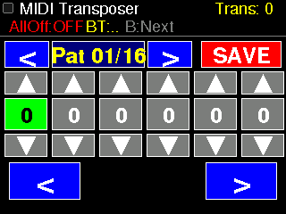
画面の構成
| 場所 | 役割 |
|---|---|
上段中央 Pat 01/16 | 選択中のパターン番号 (左右で切替) |
左上 SAVE / E など | SD 保存などの操作 |
| 中央 数字行 | 各ステップの転調値 (青枠が現在ステップ) |
| 上下の三角ボタン | ステップ値を ±1 ずつ調整 |
下段の < > | ステップを 1 つ前後へ移動 |
基本の流れ
- 上の左右ボタンで使うパターン番号 (01〜16) を選びます。
- 編集したいステップ位置の上下三角で値を調整します。
- 本番では下段の
<>でステップを進め、その瞬間の値が即時に有効 になります。 - 気に入ったら SAVE で SD カードに保存。電源を切っても残ります。
SAVE を押すと、まず保存要求がキューに入り、演奏や MIDI 受信が落ち着いた短いアイドル時間に実際の SD 書き込みが行われます。
保存完了後に SEQ Saved!、失敗時に SEQ Save Err が表示されます。
電源を切る前は、この表示を確認してください。
12. MIDI Manager とは
転調以外の 「不要メッセージのカット」「メッセージ書き換え」 を担当する、もう一つのグループです。 C 長押し で転調グループから移動できます。
FILTER
条件にマッチした MIDI を その場で破棄 します。
後段 (MAPPER, Transpose) には届きません。
MAPPER
条件にマッチした MIDI を 別のメッセージに書き換え ます。
リスト先頭から順に評価し、最初に一致した 1 ルールだけ 適用されます。
FILTER MAPPER BYPASS / ACTIVE の 3 ボタンがあります。
左 2 つでページを切り替え、一番右で そのページの全体 ON / OFF を切り替えます。
13. FILTER モード
特定の MIDI メッセージを 遮断 するためのモードです。 例えば「ジョイスティックの Pitch Bend が暴れるのでカットしたい」「Ch10 のドラムは流したくない」というケースで使います。
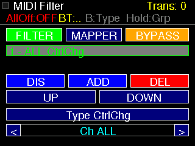
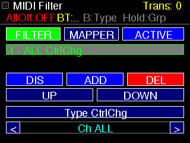
画面の構成
| 段 | 内容 |
|---|---|
| 上段 | FILTER / MAPPER ページ切替 + BYPASS / ACTIVE 切替 |
| 中段 | 登録済みルール一覧 (例: 1 - ALL CtrlChg) |
| 下段操作 | DIS 無効化, ADD 追加, DEL 削除, UP / DOWN 並べ替え |
| 最下段編集 | 選択中ルールの Type と Ch を変更 |
B ボタン: Type 順送り
FILTER 画面の ボタンは、選択中ルールの Type を一段階進める専用ボタンです。タップで切り替えるよりも素早く目的の Type に到達できます。
選べるメッセージ Type
NoteOff, NoteOn, KeyPrs, PrgChg, CtrlChg,
ChPrs, Bend, SysEx, MTC, SongPos,
SongSel, TuneReq, Clock, Start, Cont,
Stop, ActSn, Reset
設定例: 全チャンネルの Pitch Bend を遮断する
- C 長押し で MIDI Manager に入り、必要なら C 短押し で FILTER を開きます。
- 下段の
ADDをタップしてルールを 1 つ追加します。中段一覧に新しいルールが現れます。 - 追加したルールをタップして選択 (青ハイライトになります)。
- 最下段の
Typeをタップ、または を何度か押してBendに合わせます。 - その下の
ChをALLにします (全チャンネル対象)。 EN/DISを EN (有効) にします。- 上段右の
BYPASSを ACTIVE に切り替えます (BYPASS → ACTIVE)。 - これで Pitch Bend は全部遮断されます。ACTIVE / BYPASS を切り替えるだけで効果比較できます。
NoteOn をブロックしてしまうと、転調処理にも届かなくなります。
14. MAPPER モード
入力メッセージを 別の MIDI メッセージへ書き換える モードです。 1 つのルールは PG1 (変換元条件) と PG2 (変換先設定) の 2 ページから構成されます。
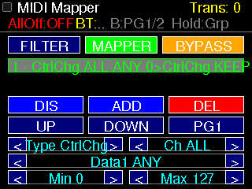
PG1 (変換元) と PG2 (変換先) の項目
| 項目 | 意味 | 備考 |
|---|---|---|
Type | メッセージ種別 | FILTER と同じリスト |
Ch | チャンネル | PG2 では KEEP で「元のまま」を意味する |
Data1 | 1 バイト目データ (例: CC 番号、ノート番号) | ANY = どれでも一致 / KEEP = 元の値を保つ |
Min / Max | 値の範囲 | レンジ変換に使う |
B ボタン: PG1 ⇄ PG2 切替
MAPPER 画面の ボタンを押すと、変換元 (PG1) と 変換先 (PG2) をワンタッチで往復できます。
評価順 (とても重要)
UP / DOWN でルールの並び順を変えると、優先順位を変えられます。
リストの上にあるルールほど優先 です。
設定例: CC#1 (Mod) を CC#11 (Expression) に置き換える
- MAPPER 画面で
ADDをタップし、ルールを追加。一覧で選択しておきます。 - を押して PG1 を表示。
- PG1 で次のように設定:
Type = CtrlChg/Ch = ALL/Data1 = 1/Min = 0/Max = 127 - もう一度 を押して PG2 へ移動。
- PG2 で次のように設定:
Type = CtrlChg/Ch = KEEP/Data1 = 11/Min = 0/Max = 127 EN/DISでルールを EN に。- 上段右の
BYPASS→ACTIVEに切り替えるとすぐ反映されます。
Min/Max と PG2 の Min/Max を別の範囲にすれば、
0–127 を 0–63 に圧縮する ような変換も可能です。
SysEx は FILTER 対象 ですが、ペイロードの変換 (MAPPER) には対応していません。
15. BYPASS と ACTIVE
FILTER と MAPPER は 独立して ON / OFF できます。 上段右の大ボタンが BYPASS のときは 素通し、 ACTIVE のときは 機能が有効 です。
BYPASS の使いどころ
- 効果がない状態と比較したいとき
- 低遅延の純粋な転調動作だけを使いたいとき
- 設定を残したまま一時的に止めたいとき
ACTIVE の使いどころ
- FILTER / MAPPER の効果を演奏に反映させるとき
- 本番ステージのメイン状態
16. MIDI 処理の流れ
受信から送信までの順序は固定です。途中で BYPASS された段はそのままスルーされます。
段ごとの動作概要
| 段 | 動き |
|---|---|
| FILTER | 条件にマッチしたメッセージを破棄。BYPASS なら全部スルー。 |
| MAPPER | 最初に一致した 1 ルールだけ適用して書き換え。BYPASS なら全部スルー。 |
| Transpose | 主に Note On / Note Off に対して、現在の Transpose 値ぶん音程を上下。 |
| All Notes Off | 16ch 全部に対して送出される (A ボタンで ON/OFF 切替)。 |
17. PC 連携 (USB シリアル)
本機は USB シリアルから操作できます。 将来、PC 側で大画面 GUI を作る際に、本体の UI をそのまま遠隔操作できるよう設計されています。
接続条件
| 項目 | 値 |
|---|---|
| ボーレート | 115200 bps |
| 改行 | LF または CRLF |
| 確認コマンド | HELP でコマンド一覧が返ってくる |
主なコマンド
| コマンド | 機能 |
|---|---|
HELP | コマンド一覧表示 |
STATUS | 現在モード, Transpose 値, FILTER/MAPPER 状態, 入出力カウンタを 1 行で返す |
REDRAW | 画面を再描画 |
BUTTON A / B / C | 物理ボタン押下を再現 |
BUTTON C LONG | C 長押しを再現 (グループ切替) |
TOUCH x y | 画面の (x, y) をタップ |
MODE PLAY | 演奏 (PLAY) モードへ直接ジャンプ |
MODE DIRECT / KEY / INSTANT / SEQUENCE | 転調モードへ直接ジャンプ |
MODE FILTER / MAPPER | MIDI Manager 内のページへ直接ジャンプ |
GROUP PLAY / TRANSPOSE / MIDI | グループを直接指定 |
SET TRANSPOSE n | 転調値を直接設定 |
INFO SCREEN | 画面サイズ情報を取得 |
SCREENSHOT PPM | 現在画面を PPM 形式で取得 |
SCREENSHOT RGB888 | 現在画面を生 RGB888 で取得 |
SCREENSHOT のレスポンス形式
OK SCREENSHOT format=PPM width=320 height=240 bytes=230415
<バイナリ本体>
OK SCREENSHOT_DONE
このしくみにより、PC 側のスクリプトやアプリから現在画面を画像として取り込めます。
INFO SCREENで画面サイズを得るSCREENSHOT PPMで現状を取得TOUCH x yやBUTTON ...で UI を操作- 再度
SCREENSHOTで結果確認
18. 困ったときに
| 症状 | 確認ポイント |
|---|---|
| PLAY モードで音が出ない |
Unit MIDI が Port A (Grove) に接続されているか確認。 画面下の INIT または を押して再初期化。TEST TONE で SD /SMF/testtone.smf (または簡易フレーズ) が鳴るかを切り分け。Port A に他の I2C デバイスを併用していないかも要確認 (UART と排他)。 |
| 転調が効かない |
FILTER が NoteOn / NoteOff を遮断 していないか確認。 FILTER の上段が ACTIVE だと、有効化中のルール全部が動きます。 |
| 音が出ない |
MAPPER で NoteOn を別の Type に書き換えていないか確認。FILTER と MAPPER の両方を BYPASS にして、転調だけが効くか試してみる。
|
| B ボタンの動きが画面ごとに違う |
画面共通ヘッダの B:○○ 表示で現在の役割が確認できます (4 章参照)。
|
| SEQUENCE が保存されない |
SD カードの状態を確認し、SAVE 後に SEQ Saved! が出るまで待ってください。
演奏中は保存要求だけが先に入り、実際の書き込みは MIDI が少し落ち着いた時点で行われます。
|
| PC からの操作が反応しない |
ボーレートが 115200 か、改行コードが LF / CRLF か確認。
まず HELP を送って応答が返るかチェック。
|
STATUS を送ると、内部の状態を 1 行で取得できます。
その内容を添えて開発者に問い合わせると、原因の切り分けが早く進みます。